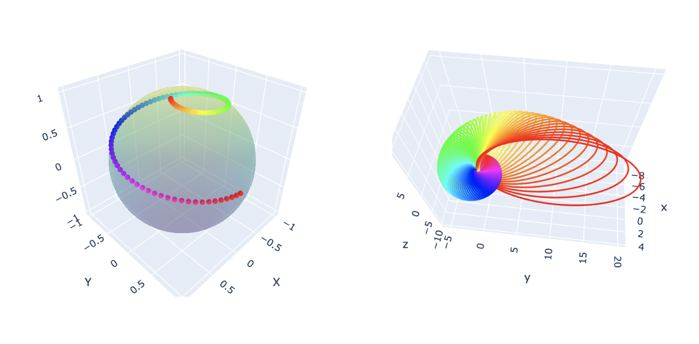

Hopf Fibrations
Table of Contents
1. Exploring Hopf Fibrations
The Hopf fibration is an interesting concept providing insights into geometry,
topology, and QM. We will explore what Hopf fibrations are and their
significance in physics.
In geometry, the concepts of base space, fibers, and total space are
fundamental for understanding structures like fiber bundles and fibrations.
1.1. Base Space
The base space is the "foundation" over which everything is organized. It is
typically a lower-dimensional space that provides the framework for the
structure of the fiber bundle.
- Example: In case of a cylinder, the base space is the disc.
\( D=\{(x, y)\in {\mathbb R^2}: (x-a)^2+(y-b)^2 \le R^2\} \)
1.2. Fibers
Fibers are the individual "threads" or spaces that are attached to each point of
the base space. They are often all the same type of space, forming a consistent
"shape" across the entire structure.
- Example: In case of a cylinder, the fibers are circles, straight lines, attached to each point on the disc.
1.3. Total Space
The total space is the "combined" space that includes both the base space and
all the fibers. It can be thought of as the entire structure before projecting
down to just the base space.
- Example: In case of a cylinder, the total space is the cylinder in \( \mathbb
{R}^3 \)
1.4. What is a Hopf Fibration?
Imagine a sphere, like the surface of a ball. In three dimensions, it seems
simple enough—but what if we add an extra dimension? A Hopf fibration describes
a beautiful way to "fiber" higher-dimensional spaces.
In mathematical terms, the Hopf fibration is a mapping: \[ S^3 \to S^2 \] where
\(S^3\) is a 3-sphere, and \(S^2\) is an ordinary 2-sphere (the surface of a
sphere in 3D space). The magic lies in the fact that \(S^3\) can be thought of
as "made up" of circles, \(S^1\), such that each circle is mapped uniquely onto
a point on \(S^2\). These circles are the fibers of the fibration.
1.5. Why Does It Matter in Physics?
Let's consider QM, as we know the state of a particle is represented as a vector
in a Hilbert space, a high-dimensional complex vector space. The wavefunction
itself has an arbitrary phase factor (a complex number of magnitude 1). Since
the phase doesn’t affect observable quantities, what really matters is the
direction of the state vector, not its exact value. This leads to the
projective Hilbert space, where each point corresponds to a normalized state up
to a phase factor. Mathematically, this space is somwhat of a quotient space.
The Hopf fibration provides a natural way to visualize how the space of possible
states is organized. Hopf fibrations are more than just a mathematical
curiosity—they are deeply connected to the structure of physical theories.
If you're intrigued, dive deeper into the world of topology and see how these
ideas shape our understanding of physics!
The interactive Plotly graph can be accessed here: Interactive Visualisation of
Hopf Fibration
import numpy as np
import pylab as plt
from matplotlib.colors import hsv_to_rgb
def hopf_inverse(phi, psi, theta):
"""Inverse map of Hopf fibration. It's a circle in 4d parameterized by theta.
"""
return np.array([np.cos((theta + psi) / 2) * np.sin(phi / 2),
np.sin((theta + psi) / 2) * np.sin(phi / 2),
np.cos((theta - psi) / 2) * np.cos(phi / 2),
np.sin((theta - psi) / 2) * np.cos(phi / 2)])
def stereo_projection(v):
"""Stereographic projection of a 4d vector with pole at (0, 0, 0, 1).
"""
v = normalize(v)
x, y, z, w = v
return np.array([x, y, z]) / (1 + 1e-8 - w)
def normalize(v):
"""Normalize a vector.
"""
return np.array(v) / np.linalg.norm(v)
def norm2(v):
"""Return squared Euclidean norm of a vector.
"""
return sum([x*x for x in v])
def get_circle(A, B, C):
"""Compute the center, radius and normal of the circle passes
through 3 given points (A, B, C) in 3d space.
See "https://en.wikipedia.org/wiki/Circumscribed_circle"
"""
a = A - C
b = B - C
axb = np.cross(a, b)
center = C + np.cross((norm2(a) * b - norm2(b) * a), axb) / (2 * norm2(axb))
radius = np.sqrt(norm2(a) * norm2(b) * norm2(a - b) / (4 * norm2(axb)))
normal = normalize(axb)
return center, radius, normal
def transform_matrix(v):
"""Return a 3x3 orthogonal matrix that transforms y-axis (0, 1, 0) to v.
This matrix is not uniquely determined, we simply choose one with a simple form.
"""
y = normalize(v)
a, b, c = y
if a == 0:
x = [1, 0, 0]
else:
x = normalize([-b, a, 0])
z = np.cross(x, y)
return np.array([x, y, z])
def generate_similar_colors(num_circles, base_hue=0.5, hue_variation=0.5):
"""
Generates a list of colors for neighboring circles with similar hues.
Parameters:
num_circles (int): Number of colors to generate.
base_hue (float): The base hue (0 to 1) for the gradient.
hue_variation (float): The range of variation around the base hue.
Returns:
list: A list of color strings in RGB format.
"""
hues = np.linspace(base_hue - hue_variation, base_hue + hue_variation, num_circles) % 1.0
colors = [hsv_to_rgb([hue, 1.0, 1.0]) for hue in hues] # Full saturation and brightness
rgb_colors = [f"rgb({int(r*255)}, {int(g*255)}, {int(b*255)})" for r, g, b in colors]
return rgb_colors
import numpy as np
import plotly.graph_objects as go
def plot_circle(center, radius, normal, num_points=100, color=None):
"""
Plots a 3D circle given its center, radius, and normal vector.
Parameters:
center (tuple): The (x, y, z) coordinates of the circle's center.
radius (float): The radius of the circle.
normal (tuple): The (nx, ny, nz) normal vector of the circle.
num_points (int): Number of points to use for plotting the circle (default: 100).
Returns:
trace (go.Scatter3d): A Plotly Scatter3d object representing the circle.
"""
# Normalize the normal vector
normal = np.array(normal)
normal = normal / np.linalg.norm(normal)
# Find a vector perpendicular to the normal
if np.isclose(normal[0], 0) and np.isclose(normal[1], 0):
tangent = np.array([1, 0, 0]) # Handle edge case when normal is along z-axis
else:
tangent = np.cross(normal, [0, 0, 1])
tangent /= np.linalg.norm(tangent)
# Find a second vector perpendicular to both the normal and tangent
bitangent = np.cross(normal, tangent)
# Generate points for the circle in the plane defined by normal
theta = np.linspace(0, 2 * np.pi, num_points)
circle_points = (
radius * np.outer(np.cos(theta), tangent) +
radius * np.outer(np.sin(theta), bitangent)
)
# Translate the circle points to the center
circle_points += np.array(center).reshape(-1, 3)
# Extract x, y, z coordinates
x, y, z = circle_points[:, 0], circle_points[:, 1], circle_points[:, 2]
if color is None:
color = "#{:02x}{:02x}{:02x}".format(np.random.randint(0, 256),
np.random.randint(0, 256),
np.random.randint(0, 256))
# Create a 3D scatter trace for Plotly
trace = go.Scatter3d(
x=x,
y=y,
z=z,
mode='lines',
line=dict(color= color, # 'green',
width=4),
name=f"Circle at {center}"
)
return trace
def plot_circles(circles, num_points=100):
"""
Plots multiple 3D circles given a list of their parameters.
Parameters:
circles (list): A list of tuples, where each tuple contains:
(center (tuple), radius (float), normal (tuple)).
num_points (int): Number of points to use for plotting each circle (default: 100).
Returns:
fig (go.Figure): A Plotly figure object containing all the circles.
"""
# Initialize the figure
fig = go.Figure()
colors = "#{:02x}{:02x}{:02x}".format(
np.ara(0, 256),
np.random.randint(0, 256),
np.random.randint(0, 256)
)
# Add each circle to the figure
for center, radius, normal in circles:
trace = plot_circle(center, radius, normal, num_points)
fig.add_trace(trace)
# Customize layout
fig.update_layout(
title="3D Circles",
scene=dict(
xaxis=dict(title='X'),
yaxis=dict(title='Y'),
zaxis=dict(title='Z')
),
showlegend=True
)
return fig
def plot_circles_with_colors(circles, fig=None):
"""
Plots multiple 3D circles with unique but similar colors.
Parameters:
circles (list): A list of tuples where each tuple contains:
(center (tuple), radius (float), normal (tuple)).
"""
num_circles = len(circles)
colors = generate_similar_colors(num_circles)
# Initialize the figure
if fig is None:
fig = go.Figure()
# Create the 3D sphere plot
#fig = sp.make_subplots(rows=1, cols=2, specs=[[{'type': 'scatter3d'}, {'type': 'scatter3d'}]])
# Add each circle with its unique color
for i, (center, radius, normal) in enumerate(circles):
# Generate circle points
trace = plot_circle(center, radius, normal)
trace.line.color = colors[i] # Assign the generated color
fig.add_trace(trace, row=1, col=2)
# Customize layout
fig.update_layout(
title="Hopf Fibration",
scene=dict(
xaxis=dict(title='X'),
yaxis=dict(title='Y'),
zaxis=dict(title='Z')
),
showlegend=False
)
#fig.show()
fig.write_html("hopf_fibration_interactive.html")
# Function to calculate points on a sphere based on phi & psi
def spherical_points(phi, psi):
# Convert spherical coordinates (phi, psi) to Cartesian coordinates
x = np.sin(phi) * np.cos(psi)
y = np.sin(phi) * np.sin(psi)
z = np.cos(phi)
return x, y, z
def plot_points_on_sphere(fig, phi_list, psi_list):
# Plot points on a sphere
x_sphere, y_sphere, z_sphere = [], [], []
for phi, psi in zip(phi_list, psi_list):
x, y, z = spherical_points(phi, psi)
x_sphere.append(x)
y_sphere.append(y)
z_sphere.append(z)
# Generate the spherical grid of points
phi_grid = np.linspace(0, np.pi, 100) # More points for the grid
psi_grid = np.linspace(0, 2 * np.pi, 100)
phi_grid, psi_grid = np.meshgrid(phi_grid, psi_grid)
# Convert the grid points to Cartesian coordinates
x_grid = np.sin(phi_grid) * np.cos(psi_grid)
y_grid = np.sin(phi_grid) * np.sin(psi_grid)
z_grid = np.cos(phi_grid)
fig.add_trace(
go.Scatter3d(
x=x_sphere, y=y_sphere, z=z_sphere,
mode='markers',
marker=dict(size=4, color=colors),
name="Points on S2"
), row=1, col=1
)
if __name__ == "__main__":
N = 200
phi_range = np.linspace(1e-3, np.pi, N) # From south pole to north pole
psi_range = (0, 5 * np.pi)
# phi_range = np.linspace(np.pi/8, np.pi, N) # From south pole (0) to north pole (pi)
# psi_range = np.linspace(0, 4 * np.pi, N) # Full rotation (0 to 2pi)
phi_list = np.linspace(phi_range[0], phi_range[-1], N)
psi_list = np.linspace(psi_range[0], psi_range[1], N)
# phi_list = np.random.random(N) * (phi_range[1] - phi_range[0]) + phi_range[0]
# psi_list = np.random.random(N) * (psi_range[1] - psi_range[0]) + psi_range[0]
#
colors = generate_similar_colors(N)
# Create the 3D sphere plot
fig = sp.make_subplots(rows=1, cols=2, specs=[[{'type': 'scatter3d'}, {'type': 'scatter3d'}]])
#
plot_points_on_sphere(fig, phi_list, psi_list)
#
circles = []
for phi, psi in zip(phi_list, psi_list):
color = np.random.random(3)
A, B, C = [stereo_projection(hopf_inverse(phi, psi, theta)) for theta in (0, np.pi/2, np.pi)]
circles.append(get_circle(A, B, C))
plot_circles_with_colors(circles, fig)

